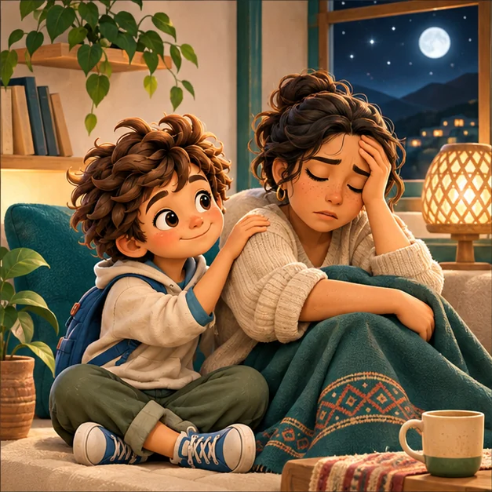

Familia Plus · 16 experiencias originales
Un momento para escucharme
Narración pausada con la voz disponible en tu dispositivo, silencios programados y libertad para detenerse. Elige una experiencia sin exigirte dormir, relajarte ni sentir algo determinado.
Explorar biblioteca
Acompañar, no imponer
Estas experiencias son de bienestar, no tratamientos. Usa un volumen cómodo, mantén la opción de silencio y detén la escucha si incomoda. En menores, la persona adulta acompaña y respeta si el niño o adolescente no desea continuar.
Elige para quién o para qué momento
Biblioteca sonora RAÍCES
Comenzamos con experiencias para personas adultas.
Cargando experiencias…
Controles editoriales
Lo que RAÍCES no promete
- No cura enfermedades ni reemplaza medicamentos o atención profesional.
- No utiliza sugestiones ocultas ni enseña contenidos durante el sueño.
- No atribuye diagnósticos, dificultades o historias privadas a ninguna persona.
- Las prácticas de fe son opcionales y están separadas del contenido general.